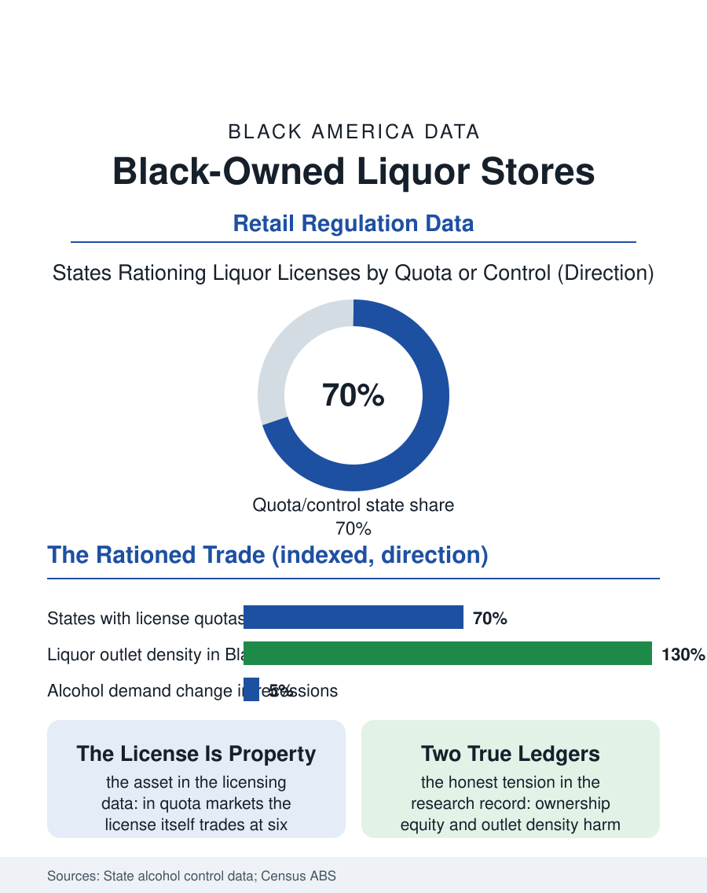

Black Business
Two Ledgers: Black-Owned Liquor Stores
Liquor retail is rationed by license, making entry a capital purchase, and its density map binds the business ledger to the health ledger in one storefront. The liquor file.

The liquor store is one of the most visible and most debated businesses in Black neighborhoods: a high-margin retail format on prominent corners, owned, in the pattern the business data record across many cities, substantially by proprietors from outside the community, a fact that has made the liquor store a recurring subject of local politics for fifty years. Black-owned liquor stores exist throughout the industry, operating inside a licensing regime that rations entry by law. This article reads the liquor file, carefully, because the file is really two files, the business and the burden, bound in one storefront.
The License Is the Business
Alcohol retail is the most state-fragmented industry in this atlas: control states run their own stores, license states ration quotas by population, and in quota markets the license itself is a tradable asset whose price, in tight markets, reaches six figures before a single bottle is stocked. That structure decides the ownership demographics more than any preference does. Entry requires buying a license from an existing holder or winning a scarce new issue, financing the inventory (a full store's stock is a warehouse of capital), and posting the bond and insurance the regulators require, so the industry's owners are, by construction, people who arrived with capital or with the family and ethnic lending networks that substitute for it. Black proprietors in the license data are present in every market, with deep roots in the post-Prohibition and post-civil-rights generations of Southern and urban retail, and Black-owned stores anchor some communities as employers and sponsors in the classic Main Street pattern. In other markets the license history runs the other way: mid-century urban renewal and license allocation patterns seated outside owners on the corners of Black neighborhoods, a geography documented in city studies and never since fully unwound, because the license, once held, renews and transfers as property.
The Economics and the Corner
The store's economics explain its durability: alcohol demand is recession-resistant, margins on spirits healthy, and the small-format store's labor model lean. The retail geography, though, is where the business file meets the health file. Researchers have mapped liquor outlet density for decades and found it elevated in Black neighborhoods relative to income and population, a distribution with documented associations to the violence and health statistics those neighborhoods carry, associations serious enough that zoning and license-cap reform, density caps, conditional use review, community input hearings, has become standard municipal practice in the cities most affected. The reform politics are genuinely double-edged in the record: caps freeze the existing geography, protecting incumbents of every background, while community review gives neighborhoods a voice in new licenses that history denied them. Black owners figure on both sides of these hearings, as applicants seeking entry into a rationed trade and as neighbors testifying about the corner's costs, a complexity the file insists on holding whole. The industry's premium tier offers the ownership story its growth chapter: wine and craft spirits retail, tasting-led and expertise-branded, is expanding in the diverse suburbs, and Black-owned wine shops and the Black-owned brands of the wine and spirits business file stock them, the culture of the product shifting toward connoisseurship in markets where the corner store model is in long decline.
A File With Two Ledgers
No other page in this atlas requires its closing to balance two true ledgers at once, and the file does so deliberately. Ledger one: the liquor store is a lawful, licensed, tax-paying business, a source of Black proprietors' wealth across generations in the markets where they hold licenses, an employer, and a retailer of a legal product adults are entitled to buy from a neighbor rather than a stranger; the equity question within the industry, who holds the rationed licenses and the appreciating asset they represent, is a legitimate ownership question of exactly the kind this atlas exists to record. Ledger two: the product's harms are not distributed by the market's logic but by the density map, and the neighborhoods carrying the most outlets carry documented excess harm, which the public health files price in hospital and mortality data. Policy that serves Black communities has to read both ledgers: license equity and ownership opportunity on one side, density limits and treatment investment on the other, pursued simultaneously rather than traded against each other. The liquor file closes at the corner it began on, where the store's sign, in many cities the brightest on the block, advertises the whole dilemma. The question the data leave is not whether Black America should own its liquor retail, it should own its retail, full stop, but whether the map of outlets is drawn by the community's interest or by the license history of 1960, and that question, unlike most in this atlas, is decided in hearings any resident may attend.
More in Black Business
Black-Owned Businesses: Counts, Receipts, and the Representation Gap
About 161,000 Black-owned employer firms and three million solo ventures: how the Census Bureau counts Black business ownership, where firms concentrate, and the gap between population share and business share.
Black Median Net Worth: The Wealth Gap in Federal Reserve Data
The Federal Reserve puts Black median family net worth at $44,900, against $285,000 for White families — about 16 cents on the dollar. The widest gap in economic data.
Black Buying Power: The $1.8 Trillion Consumer Economy
Black buying power is estimated at about $1.8 trillion — larger than the economy of most nations. What the figure measures, who produces it, and what it buys.
Source: State alcohol beverage control licensing data; U.S. Census Bureau, Annual Business Survey (NAICS 44531); public health outlet-density research.